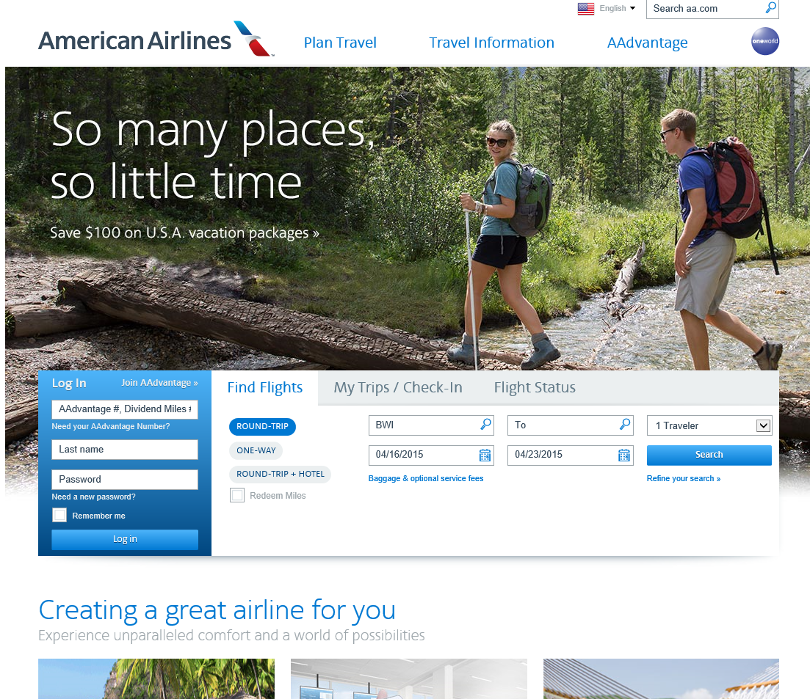
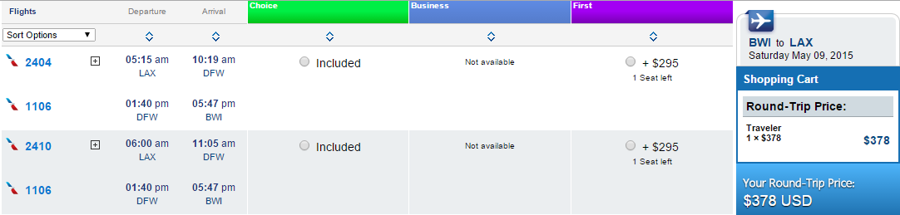
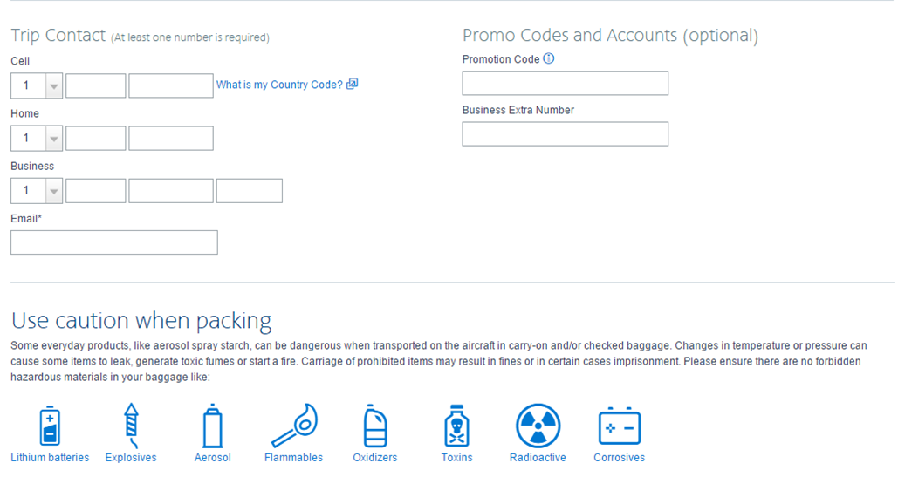

American Airlines
Overview & Structure
American Airlines had a somewhat different layout than Delta, but were still efficient in what they were offering to their customers. Even though they used fewer colors as opposed to Delta, their offerings were clearly written and millions of people visit and book flights with this airline.Positive Features
Price Calculation
Whenever booking the page will show the price of each individual flight to help the consumer. Booking Reminders
Whenever booking all of the prohibited flight items are displayed to remind flyers.Fee Information Up Front
Fee information located within the booking search to give ease-of-use and make the information easier to find. Round Trip Flights Low Cost
Whenever searching for flights, some options allow return flights to be only a few additional dollars or entirely free.Features to Work on
Search Location
The search location for bookings is at the bottom of the homepage on the top of the fold. This cuts off some information and makes it hard to see right awayFirst Class Information is Hard to Find
The information on what First Class benefits can make for users is very difficult to locate from the homepage.
Lack of Instruction or Information
Some pages and offers, such as the Avis discount, come with little explanation of how to earn the discount and how to apply it to trips.